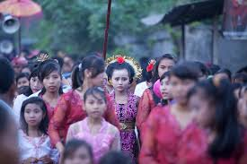

UNFPA is an organization that stands for United Nations Population Fund, it is located in New York. They are a organization devoted to helping men or women live a healthy, equal life.
UNFPA works with governments and civil society partners at to promote and protect the human rights of young girls including helping youth policies and provide programs and services as a way to transform gender norms to end practices of child marriage. Many of these efforts, educate and empower girls to know and exercise their human rights, including their right to choose if, when, and whom to marry.
As a part of that effort, another organization that promotes ending child marrige is UNICEF USA. UNICEF USA joined forces with Zonta International to raise awareness and enact change to end child marriage in the U.S. aswell as around the world. UNICEF and Zonta launched a global program to gain more action to end child marriage, focusing their efforts in 12 major countries where child marriage is the most popular. Some countries are Ethiopia, Ghana, India, and Niger.
This organization recieves technical support to help educate and protect vulnerable girls. Program work focuses on: